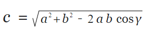

Este é um projeto da disciplina de Engenharia de Software do 6º Semestre de 2021 da Fatec de São José dos Campos, sendo o Orientador da disciplina o professor Fabrício Galende Marques de Carvalho.
A Calculadora tem o propósito de realizar um cálculo com operações elementares, envolvendo funções transcendentes.
Cosseno de X
